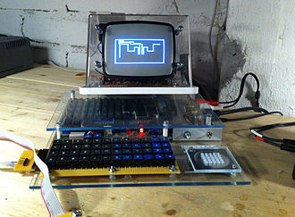

Історія гри змійка
Першою грою цього плану був ігровий автомат Hustle, випущений фірмою Gremlin в 1977 році. Одна з перших реалізацій (можливо, перша) на домашньому комп'ютері була зроблена в 1979 році на комп'ютері TRS-80, автор F. Seger (Німеччина). Незабаром після неї вийшла версія для Commodore VIC-20, під назвою Worms. Мікрокомп'ютерних версія гри Hustle була випущена Milton Bradley для комп'ютера TI-99 / 4A в 1980 році. Версії гри існували і на багатьох радянських комп'ютерах, наприклад - на Радіо 86РК. У число відомих варіантів Пітона входить гра Nibbles, деякий час входила до комплекту MS-DOS. Тривимірна версія Пітона існує для телефону Nokia N70 і наступних телефонів Nokia. Також вона реалізована на PC. В даний час тільки для IOS існує більше трьохсот варіантів гри.